|
MUSICAL THEATRE CONCERT VIDEOS |
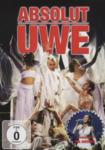 | Absolut Uwe
Year: 2009 Language: DE Format: mp4 Resolution: 576p
|
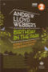 | ALW'S Birthday in the Park
Year: 2008 Language: EN Format: mp4 Resolution: 480p
|
| An Evening with Andrew Lloyd Webber
Year: 1982 Language: EN Format: mp4 Resolution: 576p
|
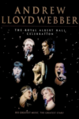 | Andrew Lloyd Webber - The Royal Albert Hall Celebration
Year: 1998 Language: EN Format: mp4 Resolution: 576p
|
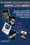 | Andrew Lloyd Webber The Premiere Collection Encore
Year: 1989 Language: EN Format: mp4 Resolution: 576p
|
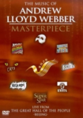 | Andrew Lloyd Webber: Masterpiece
Year: 2001 Language: EN Format: mp4 Resolution: 576p
|
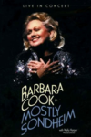 | Barbara Cook: Mostly Sondheim
Year: 2003 Language: EN Format: mp4 Resolution: 480p
|
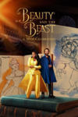 | Beauty and the Beast: A 30th Celebration
Year: 2022 Language: N/A Format: mp4 Resolution: 1080p
|
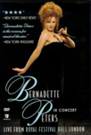 | Bernadette Peters in Concert
Year: 1998 Language: EN Format: |
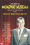 | The Best of Broadway Musicals
Year: 2003 Language: EN Format: mp4 Resolution: 480p
|
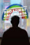 | Broadway Backwards 2021 - Full Show
Year: 2021 Language: EN Format: mp4 Resolution: 720p
|
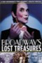 | Broadway's Lost Treasures
Year: 2003 Language: EN Format: mp4 Resolution: 480p
|
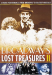 | Broadway's Lost Treasures II
Year: 2004 Language: EN Format: mp4 Resolution: 480p
|
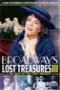 | Broadway's Lost Treasures III - The Best of the Tony Awards
Year: 2005 Language: EN Format: mp4 Resolution: 480p
|
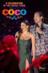 | A Celebration of the Music from Coco
Year: 2020 Language: EN Format: mp4 Resolution: 1080p
|
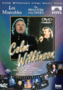 | Colm Wilkinson In Concert
Year: 1997 Language: EN Format: mp4 Resolution: 576p
|
| Diva
Year: 2006 Language: EN Format: mp4 Resolution: 480p
|
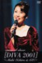 | Diva 2001
Year: 2001 Language: EN Format: mp4 Resolution: 480p
|
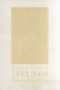 | Diva 2004
Year: 2004 Language: EN Format: mp4 Resolution: 480p
|
| Elaine Paige at the BBC
Year: 2022 Language: EN Format: mp4 Resolution: 720p
|
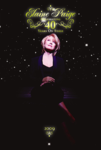 | Elaine Paige Celebrating 40 Years On Stage
Year: 2009 Language: EN Format: mp4 Resolution: 480p
|
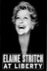 | Elaine Stritch: At Liberty
Year: 2002 Language: EN Format: mp4 Resolution: 576p
|
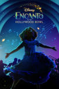 | Encanto at the Hollywood Bowl
Year: 2022 Language: EN Format: mp4 Resolution: 720p
|
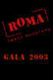 | Gala jubileuszowa Teatru Roma
Year: 2003 Language: EN Format: mp4 Resolution: 480p
|
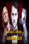 | Gerónimo Rauch 'Entre miserables y fantasmas'
Year: 2014 Language: ES, EN Format: mp4 Resolution: 1080p
|
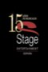 | Gran Gala de Stage Entertainment: 15 Aniversario
Year: 2014 Language: EN Format: mp4 Resolution: 480p
|
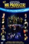 | Hey, Mr Producer!
Year: 1998 Language: EN Format: mp4 Resolution: 576p
|
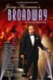 | Jerry Herman's Broadway
Year: 1994 Language: EN Format: mp4 Resolution: SD
|
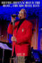 | Ken Page at 54 Below
Year: 2022 Language: EN Format: mp4 Resolution: 1080p
|
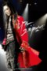 | Levay With Friends
Year: 2010 Language: DE, KO Format: mp4 Resolution: 480p
|
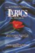 | Lyrics by Tim Rice
Year: 1985 Language: EN Format: mp4 Resolution: 576p
|
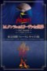 | M.クンツェ＆S.リーヴァイの世界
Year: 2012 Language: JA, DE Format: mp4 Resolution: 720p
|
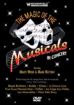 | The Magic Of The Musicals
Year: 1992 Language: EN Format: mp4 Resolution: 576p
|
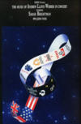 | The Music of Andrew Lloyd Webber
Year: 1992 Language: N/A Format: mp4 Resolution: 480p
|
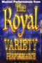 | Musical Highlights from The Royal Variety Show
Year: 2014 Language: EN Format: mp4 Resolution: 576p
|
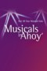 | Musicals In Ahoy 2002
Year: 2002 Language: NL Format: mp4 Resolution: SD
|
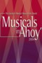 | Musicals In Ahoy 2004
Year: 2004 Language: NL Format: mp4 Resolution: SD
|
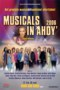 | Musicals In Ahoy 2006
Year: 2006 Language: NL Format: mp4 Resolution: SD
|
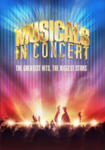 | Musicals in Concert
Year: 2014 Language: NL Format: mp4 Resolution: 576p
|
| Musicals: The Greatest Show
Year: 2021 Language: EN Format: mp4 Resolution: 720p
|
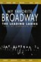 | My Favorite Broadway: The Leading Ladies
Year: 1999 Language: EN Format: mp4 Resolution: 480p
|
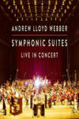 | A Night in at the Theatre – Andrew Lloyd Webber’s Symphonic Suites
Year: N/A Language: EN Format: mp4 Resolution: 720p
|
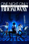 | One Night Only: The Best of Broadway
Year: 2020 Language: EN Format: mp4 Resolution: 1080p
|
| Paloma San Basilio En Vivo
Year: 1985 Language: ES Format: mp4 Resolution: 576p
|
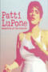 | Patti LuPone Matters Of The Heart
Year: 2012 Language: EN Format: mp4 Resolution: 480p
|
| Patti LuPone On Broadway
Year: 1995 Language: EN Format: mp4 Resolution: 480p
|
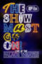 | The Show Must Go On!
Year: 2021 Language: EN Format: mp4 Resolution: 720p
|
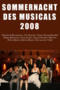 | Sommernacht des Musicals
Year: 2008 Language: EN Format: mp4 Resolution: 576p
|
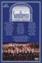 | Sondheim: A Celebration at Carnegie Hall
Year: 1992 Language: EN Format: mp4 Resolution: 480p
|
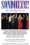 | Sondheim! The Birthday Concert
Year: 2010 Language: EN Format: mp4 Resolution: 480p
|
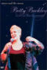 | Stars and the Moon: Betty Buckley Live at the Donmar
Year: 2001 Language: EN Format: mp4 Resolution: 576p
|
| Stephen Sondheim's 75th: The Concert
Year: 2005 Language: EN Format: mp4 Resolution: 480p
|
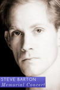 | Steve Barton Memorial Concert
Year: 2012 Language: EN, DE Format: mp4 Resolution: 576p
|
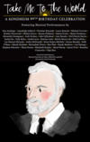 | Take Me to the World: A Sondheim 90th Birthday Celebration
Year: 2020 Language: EN Format: mp4 Resolution: 1080p
|
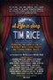 | Tim Rice: A Life In Song
Year: 2014 Language: EN Format: mp4 Resolution: SD
|
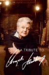 | Tribute To Angela Lansbury
Year: 2012 Language: EN Format: mp4 Resolution: SD
|
| Wales in The West End
Year: 1997 Language: EN, CY Format: mp4 Resolution: 576p
|